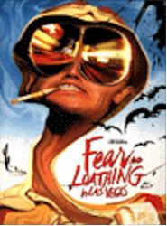
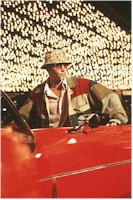

Contents | Features | Reviews | News | Archives | Store |
 |
|
| Movie Credits | Buy It! |
Fear and Loathing
In Las Vegas
Review by Elias Savada
Posted 22 May 1998
|  | Directed by Terry Gilliam. Starring
Johnny Depp and Benicio Del Toro, Written by Terry Gilliam, Tony Grisoni, and Alex Cox, |
This big-screen adaptation of the 1971 cult classic is a sure candidate for many worst ten film lists. To gauge how a particular audience will rate this subversive, drug-addled journey, take this simple test. Make a mental note (no pencils necessary) of how many people are settled down in their seats for this visually-exciting but ultimately empty-headed bumper ride to nowhere. Two hours later, open your eyes, gasp for air, and count the number of patrons still alive and kicking as the end credits scroll by. Incredible, eh? Where is everyone? Aside the Gonzo freaks, many will have bailed out, I dare say (just from the barf scenes alone), as this strange little picture stutters farther down the self-destructive, nightmarish world of its director and guiding spirit, Terry Gilliam. Not since the likes (or dislikes) of Oliver Stone's Natural Born Killers (1994) has a film from a major distributor been so ripe for condemnation. The marketing department at Universal must be in fits trying to figure out who in their right mind would shell out the bucks for this self-indulgent homage to 1970s counter-culture excessives.
What went wrong here? It started with the preemptive "creative differences" as original punk writer-director Alex Cox (Sid and Nancy, Repo Man) got booted at Johnny Depp's behest. Ex-Monty Pythonite Gilliam, a fan of the book for years, was brought in to add his particular style to the project. "I thought it was incredibly funny and outrageous, but I simply read the book, enjoyed it, and then didn't think of it for years," said Gilliam in a recent piece in American Cinematographer. Gilliam is also friendly with Ralph Steadman, who illustrated the book's text and kept begging the director to do a film version. "In 1989, a script turned up which briefly got me exciting about the book again, but I was busy with another project."
I'm also enamored of Gilliam, the imaginative mind behind such stunningly surreal works as 12 Monkeys, Time Bandits, and Brazil – the latter's extended version is a cornerstone of my laserdisc collection. In conjunction with one-eyed cinematographer Nicola Pecorini and production designer Alex McDowell (Lawnmower Man, The Crow), Gilliam's film is an extremely harsh assault on your visual and aural equilibrium. Wide-angle lenses (the standard lens was 16mm!), hallucinogenic colors, frantic pacing (going where?), and frenzied delivery of dialogue – whether drug induced or not – creates a sensory overload. The early-going appears relatively tame and occasionally funny, but after the first half-hour, caveat emptor. Rob Bottin contributes some neat Vegas lounge lizards that rival the Star Wars cantina folk, but again, be warned, watching this film is the equivalent to a roller coaster ride – without a seat belt. This may be a faithful adaptation, but how much offal can a poor audience be expected to wade through in the course of this movie?
The acting will give you acid heartburn. Johnny Depp as the spaced-out journalist Raoul Duke (a thinly-disguised Thompson), while Benicio Del Toro is Dr. Gonzo, his overweight racially-handicapped, Samoan attorney. Together they never manage to generate any excitement beyond the one-dimensionality of their characters. Depp, no stranger to oddball characters (Edward Scissorhands, Ed Wood), continues on his merry acting way as he parades his bald pate about and forever dangles a cigarette holder while driving himself and his convertible (christened The Red Shark) down a mind-altering, unmarked road. It may be a daring portrayal – as is Del Toro's – but they're landlocked in a hellish inferno without any heart or soul. The rest of the cast pops up and out in a series of cameos starting with Katherine Helmond, a Gilliam favorite, in a facial-contortion scene plucked from Brazil. But the distorted world of this Don Quixote and Pancho Villa in their trip (and as they trip) through the garish world of Las Vegas casinos and freak shows begs for an answer to the question Duke asks halfway through this misadventure, "What was the meaning of this trip?"
Many have attempted to translate Fear and Loathing in Las Vegas into a "major motion picture." Martin Scorsese (with Jack Nicholson as Duke!) and Ridley Scott were associated with the property at one time or another. The baton was passed, the film now made, we are left to ponder what has Gilliam wrought. If this is the ultimate road movie, does that leave us, the viewers, as the ultimate road kill?
Contents | Features | Reviews | News | Archives | Store
Copyright © 1999 by Nitrate Productions, Inc. All Rights Reserved.